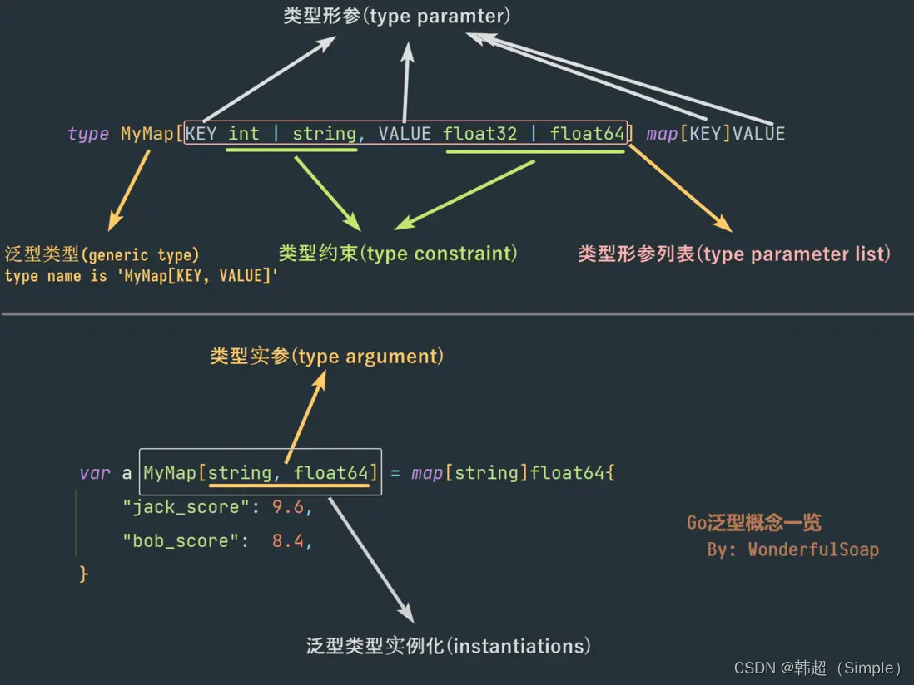

泛型是 Go 1.18 引入的核心特性，它允许在定义类型、函数和方法时使用类型形参，将具体类型延迟到实例化时确定。
泛型主要解决两个痛点：一是避免为每种类型重复编写相似逻辑；二是替代
interface{}
带来的类型不安全与运行时开销。使用泛型，你可以编写出类型安全、高度复用且零运行时损耗的代码——编译器会在编译期完成类型检查和实例化，既保证灵活性，又不牺牲性能。
简单理解：泛型就是为代码预留一个“类型占位符”，定义时用 T
代表未知类型，使用时再填入 int、string
等具体类型实参。本文档将系统讲解 Go
泛型的语法、约束、接口演变及版本差异。
1. 泛型类型
泛型允许在定义类型时使用类型形参（Type Parameter），从而编写适用于多种具体类型的抽象代码。在 Go 中，泛型通过方括号声明类型形参。
基本定义语法：
1 | type Slice[T int | float32 | float64] []T |
以上示例中，T 是类型形参，其约束为
int、float32、float64
的并集。实例化时必须传入具体的类型实参（Type
Argument）。
实例化与使用：
1 | var a Slice[int] = []int{1, 2, 3} |
每个不同的类型实参都会生成独立的类型实例。
2. 相关术语速览
| 术语 | 说明 |
|---|---|
| 类型形参（Type Parameter） | 泛型定义中占位的类型名称，如 T |
| 类型实参（Type Argument） | 实例化时传入的具体类型，如 int |
| 类型约束（Type Constraint） | 限定类型形参可接受的类型集合，如 int \| float32 |
| 泛型类型（Generic Type） | 带有类型形参的类型定义 |
| 实例化（Instantiation） | 用类型实参替换形参，生成具体类型的过程 |

3. 多类型形参与嵌套约束
类型定义可同时使用多个类型形参，且形参之间可以相互引用。
1 | type WowStruct[T int | float32, S []T] struct { |
这里 S 的约束依赖于 T：S
必须是 T 类型的切片。
4. 泛型 Receiver（方法接收器）
泛型类型可以定义带类型形参的方法，即 泛型 Receiver。在方法声明中，接收器部分需要保留类型形参。
1 | type MySlice[T int | float32] []T |
使用时，实例化后的类型自动拥有对应的方法：
1 | s := MySlice[int]{1, 2, 3} |
5. 泛型函数
函数也可以拥有类型形参，称为泛型函数。
1 | func Add[T int | float32 | float64](a T, b T) T { |
调用时，Go 编译器支持自动类型推导，通常无需显式指定类型实参：
1 | result := Add(3, 5) // 推导为 int |
6. 泛型方法（结构体方法）
重要版本说明：
- Go 1.27 之前：不允许定义泛型方法，即方法不能独立拥有自己的类型形参。
- Go 1.27 开始：支持为具体类型定义带有自身类型参数的方法，但此类泛型方法绝对不能用来实现任何接口。
错误示例（Go 1.27 后仍禁止用于接口实现）：
1 | type Worker interface { |
推荐替代方案：
- 使用顶层泛型函数：将逻辑抽取为独立的泛型函数，把接收者作为普通参数传入。
- 将类型参数添加到接收器类型本身：将整个结构体定义为泛型，所有方法共享类型参数，从而安全地实现接口。
示例（方案2）：
1 | type MyWorker[T any] struct{} |
7. 类型约束的复用与组合
7.1 定义可复用的约束接口
可以将类型约束抽取为独立的接口，方便复用和组合。
1 | type Int interface { |
7.2 使用 ~ 指定底层类型
~ 符号表示匹配底层类型（Underlying
Type）相同的所有类型，包括自定义类型。
1 | type Int interface { |
限制：
~后面只能跟基本类型（如int、float64、string等），不能跟接口类型。
8. 接口的新视角：从方法集到类型集
Go 1.18 之后，接口的定义从“方法集”扩展为“类型集（Type Set）”。一个接口现在代表一个类型的集合，所有满足该集合条件的类型都实现了该接口。
1 | type ReadWriter interface { |
此接口代表所有同时实现了 Read 和 Write
方法的类型。
接口实现的新判定
- 若
T是非接口类型：当T属于接口I的类型集时，称T实现了I。 - 若
T是接口类型：当T的类型集是I类型集的子集时，称T实现了I。
9. 类型的并集与交集
接口中多行类型定义或嵌入多个接口时，取它们之间的交集。
1 | type AllInt interface { |
空类型集
如果并集中的类型没有交集，则接口的类型集为空，这样的接口无法被任何类型实现。
1 | type Bad interface { |
空接口 interface{} 与
any
空接口没有方法且没有类型限制，代表所有类型的集合。在类型约束中使用空接口，意味着约束接受所有类型。
1 | type any = interface{} // Go 1.18 起，any 是 interface{} 的别名 |
10.
内置约束：comparable 与 cmp.Ordered
10.1 comparable
Go 内置了 comparable 接口，代表所有可以使用
== 和 !=
进行比较的类型。comparable
常用于泛型映射（map）的键类型约束。
1 | // 错误：map 的键必须可比较 |
10.2 cmp.Ordered（Go 1.21
引入）
Go 标准库 cmp 包提供了 Ordered
约束，代表所有支持
<、<=、>、>=
比较的类型（即有序类型）。这包括所有整数、浮点数和字符串类型。
1 | import "cmp" |
注意：
cmp.Ordered不是内置关键字，而是标准库提供的类型约束，需要显式导入。
11. 接口类型分类
根据是否包含类型约束，接口可分为两类：
| 分类 | 特征 | 能否定义变量 |
|---|---|---|
| 基本接口 | 仅包含方法，不含类型元素 | ✅ 可以 |
| 一般接口 | 包含类型元素（如 ~int、\|） |
❌ 不可以 |
示例（一般接口）：
1 | type ReadWriter interface { |
该接口代表所有以 string 或 []rune
为底层类型，且实现了 Read 和 Write
方法的类型集合。但此类接口不能用于变量声明，只能用于类型约束。
12. 泛型接口
接口本身也可以带有类型形参，称为泛型接口。
1 | type DataProcessor[T any] interface { |
泛型接口必须实例化后才能使用，例如 DataProcessor[string]
等价于：
1 | type DataProcessor[string] interface { |
泛型接口也可同时包含类型约束和方法：
1 | type DataProcessor2[T any] interface { |
13. 使用注意事项与常见陷阱
13.1 基础类型不能仅含类型形参
1 | // 错误：类型形参不能单独作为基础类型 |
13.2 指针类型约束的歧义处理
某些写法会被编译器误认为表达式，需用 interface{}
包裹或添加逗号消除歧义。
1 | // 错误：T *int 被误认为 T 乘以 int |
13.3 匿名结构体与匿名函数不支持泛型
Go
不允许匿名结构体或匿名函数单独拥有类型形参。匿名函数没有名字，而Go规定类型参数[T any]必须紧跟在函数或类型名后面，所以匿名函数根本“没地方写”类型参数，更无法被显式实例化
- 用
|连接的多个类型必须互不相交（接口类型除外）。 - 类型的并集中不能包含类型形参。
- 接口不能直接或间接包含自身。
- 并集成员多于一个时，不能直接或间接并入
comparable。 - 带方法的接口（无论基本或一般）不能出现在并集中。
14. 泛型底层实现
核心策略：编译时按需生成 + 运行时字典辅助
Go泛型采用混合策略，在编译时根据类型的内存布局决定是”生成专用代码”还是”共享代码+传递字典”。
14.1 整体流程
1 | 编写代码 → 编译阶段 → 可执行文件 → 运行阶段 |
14.2 单态化（Monomorphization）
适用类型：值类型（int、float64、struct等），每种内存布局独立。
示例代码： 1
2
3
4
5
6
7
8
9func Add[T any](a, b T) T {
return a + b
}
func main() {
Add[int](1, 2) // 触发：生成 func(int, int) int
Add[float64](3.14, 2) // 触发：生成 func(float64, float64) float64
Add[string]("hello", "world") // 触发：生成 func(string, string) string
}
编译后内存布局： 1
2
3
4
5
6
7
8代码段:
┌──────────────────────────┐
│ Add_int 的机器码 │ ← 专门处理 int
├──────────────────────────┤
│ Add_float64 的机器码 │ ← 专门处理 float64
├──────────────────────────┤
│ Add_string 的机器码 │ ← 专门处理 string
└──────────────────────────┘
特点： - ✅ 运行时零额外开销 - ✅ 可充分内联优化 - ❌ 代码体积增大（每类型一份）
14.3 共享代码 + 字典（Dictionary）
适用类型：相同内存布局的类型（所有指针、所有接口等），共用一份代码。
示例代码： 1
2
3
4
5
6
7
8
9
10
11func Add[T any](a, b T) T {
return a + b
}
func main() {
var x, y *int
var m, n *string
Add[*int](x, y) // 走共享代码 + 字典A
Add[*string](m, n) // 走共享代码 + 字典B（不同字典！）
}
编译后内存布局： 1
2
3
4
5
6
7
8
9
10
11
12
13
14代码段:
┌──────────────────────────────┐
│ Add_shared_ptr 的机器码 │ ← 所有指针类型共用一份！
│ (通过字典获取类型信息) │
└──────────────────────────────┘
↑ ↑
| 调用时传入 | 调用时传入
┌────┴────┐ ┌────┴────┐
数据段: │ │
│ 字典A │ │ 字典B │
│ *int信息 │ │ *string信息│
│ 大小:8 │ │ 大小:8 │
│ 方法集.. │ │ 方法集.. │
└─────────┘ └─────────┘
运行时调用示例（伪码）： 1
2
3
4
5
6
7
8
9
10
11
12
13
14
15
16
17
18// 编译器生成的共享代码（概念示意）
func Add_shared(a, b unsafe.Pointer, dict *Dictionary) unsafe.Pointer {
// 从字典中读取类型信息
size := dict.Type.Size
// 分配内存
result := runtime.newobject(dict.Type)
// 执行加法（根据字典中的类型信息进行不同操作）
switch dict.Type.Kind {
case kindInt:
*(*(*int)(result)) = *(*int)(a) + *(*int)(b)
case kindString:
*(*(*string)(result)) = *(*string)(a) + *(*string)(b)
}
return result
}
字典包含的信息： | 字段 | 说明 | 示例 | | ——– |
—————- | ————————— | | *_type | 类型元数据 |
大小、对齐、哈希、相等函数 | | *itab | 接口转换表 |
用于类型断言和接口方法调用 | | 子字典 | 嵌套泛型调用所需 | 调用
Wrap[T] 时传递的字典 | | 方法地址 | 泛型类型的方法集 |
String()、Compare()等 |
特点： - ✅ 代码体积小（多类型共享） - ✅ 编译速度快（生成代码少） - ❌ 运行时极微小开销（多传一个参数、多几次解引用） - ❌ 无法内联优化（间接调用）
14.4 一句话总结
Go泛型 = 编译时按需生成专用代码（值类型） + 编译时生成共享代码+运行时传入字典（指针等相同形状类型），字典只用于补充共享代码缺失的类型信息，而非用于”查找”代码副本。